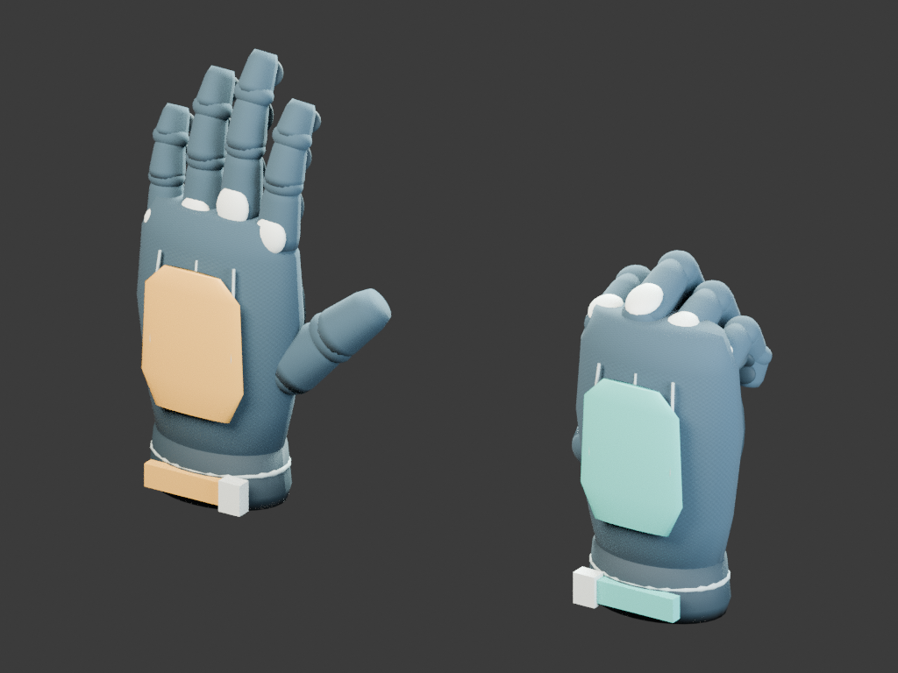
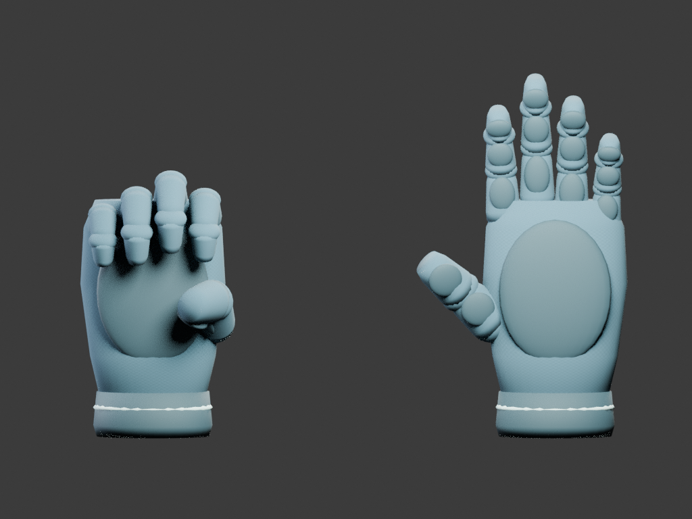

版: skygrip-20261111-r012 / 比較元: 公開版 r011
一人称ゲームの主役である左右の手を中心に、鳥・救助ドローンを含む10項目を実装しました。VRの頭部・コントローラー追跡位置には人工的な遅延を追加していません。
| ID | 改善前 | 改善後 | 変更ファイル（src/） | 自動検査の範囲 |
|---|---|---|---|---|
| CM01 | クラシック操作の手が保持点へ瞬間移動 | 表示位置だけを臨界減衰で移動。論理座標と登攀判定を維持 | character-motion.ts / main.ts | 60/72/90/120 Hzで収束・目標座標不変、実アプリ入力回帰 |
| CM02 | 伸ばした手の手首が常に同じ角度 | 小さい前方弧と速度に応じた手首の傾き | character-motion.ts | 位置・角度の上限、途中で逆向きに動かす検査 |
| CM03 | 全ての指関節が同時に曲がる | 指と関節ごとに握り始めをずらす | hands.ts | 関節の順序・1フレームの変化・最終握り角 |
| CM04 | 親指と指の開きが固定 | 親指が対向して回り込み、指の開きも握りに追従 | hands.ts | 左右対称・開放時の復帰 |
| CM05 | つかむ直前も指が完全に開いたまま | 縁の近くで控えめに指を曲げて準備 | hands.ts / main.ts | 24%以内の予備屈曲・保持状態への非干渉 |
| CM06 | 停止中にも指が動き、画質交換で握りが初期化 | ポーズを固定し画質切替時も握り途中の形を引き継ぐ | hands.ts / main.ts | 停止中の位置・角度不変、画質交換、再開 |
| CM07 | 鳥が直線往復し向きが進路に合わない | 曲線飛行と進行方向への滑らかな向き変更 | character-motion.ts / main.ts | 20秒間の位置・回転の連続性 |
| CM08 | 鳥の羽が一斉に単純往復 | 羽ばたきと滑空を混ぜ、翼端・羽根・尾に遅れと個体差 | birds.ts / world.ts | 翼・尾の振幅、変化量、個体差 |
| CM09 | 鳥が警告位置へ出現し攻撃後に遠景へ飛ぶ | 見えている位置から接近し、終了後は曲線の通常飛行へ接続 | character-motion.ts / main.ts | 接近端点・22秒の警告/攻撃/帰還、ポーズ中静止 |
| CM10 | 救助ドローンが一定速度で出発・停止 | 加減速して近づき、姿勢を戻して小さくホバリング | rescue.ts / world.ts | 出発速度・到着位置連続性・ホバリング範囲 |
落ち着いた青灰色の織物に、左はアンバー、右はティール。甲の保護パネル、指の保護部、手首のストラップと留め具を追加しました。肌の写実表現ではなく、登攀装備として統一したデザインです。


自動テストは座標・角度・状態遷移と、DOM/WebGL/音声を模擬した実アプリのCPU検査です。4060 Tiの4K実FPS、実際の握り心地、物理ゲームパッド、実音声、Quest両眼表示は未確認です。独立した2Dゲームはありません。2D検査はメニュー/HUD、3D検査は登攀を対象にします。
既存セーブへ一切アクセスしない検証モードで、PC 4K画質を選び、場面準備→約10秒待つ→計測開始。右下で通常/負荷と2D UI/3Dを切り替え、60秒ずつ計測できます。画面の実描画解像度を確認してください。CPU時間はGPU時間とは異なります。